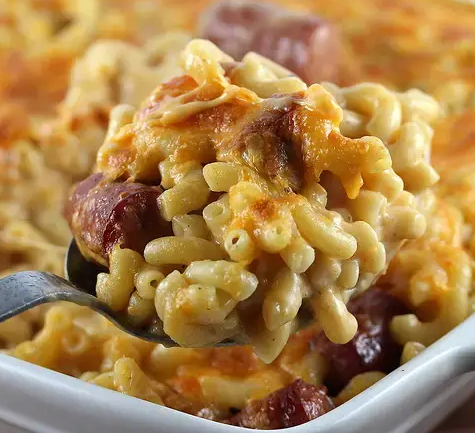

Hotdog Mac&Cheese

DESCRIPTION
This Mac and Cheese with Hot Dogs Recipe is a very simple recipe that can be put together quickly. it's rich in flavours and perfect for hotdog lovers.
INGREDIENTS
- 1 pound elbow macaroni
- Salt and pepper to taste
- 2 tablespoons extra-virgin olive oil
- 1 package beef hot dogs (cut into 1-inch pieces)
- 1 tablespoon butter
- 1 medium onion (finely chopped)
- 2 tablespoons all-purpose flour
- 1/2 cup chicken broth
- 2 cups milk
- 1 generous tablespoon spicy mustard
- 2 generous tablespoons ketchup
- 3 cups Sharp Cheddar
STEPS
- Cook Macaroni according to package instructions for al dente.
- Preheat broiler for low heat- and set rack 12 inches from heat
- While pasta cooks, heat a large deep skillet over medium-high heat. Add 1 tablespoon extra-virgin olive oil, and then add hot dogs and brown on both sides. Remove the hot dogs with a slotted spoon to a paper towel lined plate
- Add another tablespoon of olive oil and butter. When butter melts, cook onions until translucent, then add flour and cook another minute; add the chicken broth until thickened
- Mix in milk and bring to a boil, then season the sauce with salt and pepper, and stir in the mustard and ketchup
- Lower the heat and add 2 cups of cheese. Stir to melt
- Drain pasta well. Combine pasta and hot dogs with sauce- then pour into a 13 x 9 casserole dish and top with remaining cheese
- Melt and brown cheese under a broiler. Serve Hot-feeds 4-6